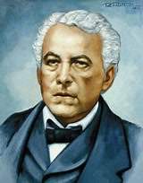

<main class="main-content ia-chat">
    <header class="chat-header">
        
        <div class="ia-status">
            <h3>Consultas al General</h3>
            <small>Basado en fuentes oficiales del Ejército y Gaceta Sandinista.</small>
        </div>
    </header>
    
    <div id="ia-mensajes" class="chat-box">
        <div class="mensaje-ia">
            "Saludos, joven compatriota. ¿Qué deseas aprender sobre la defensa de nuestra soberanía?"
        </div>
    </div>
    
    <div class="chat-input">
        <input type="text" id="user-input" placeholder="Pregunta sobre San Jacinto o el legado de dignidad...">
        <button id="send-btn" class="btn-p">Consultar</button>
    </div>
</main>